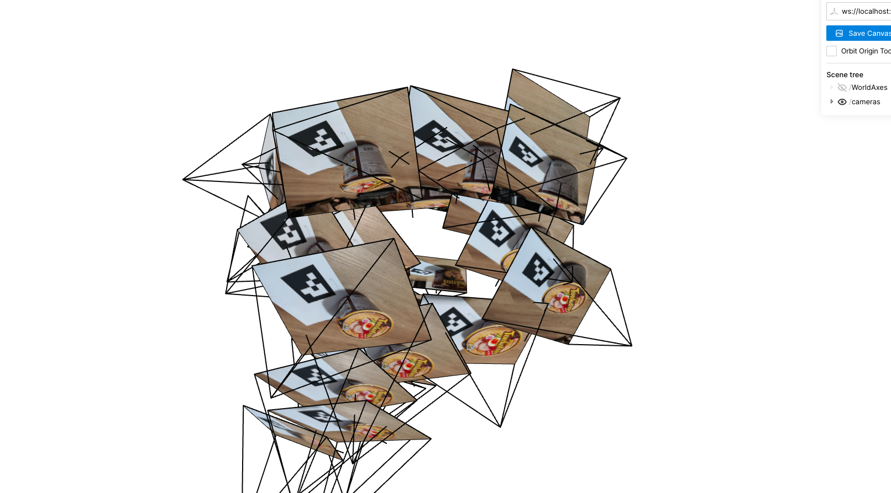
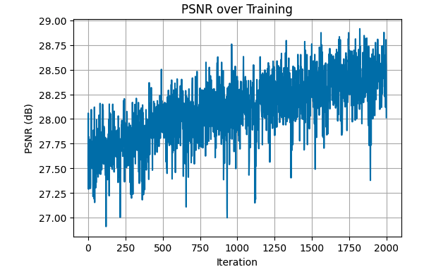
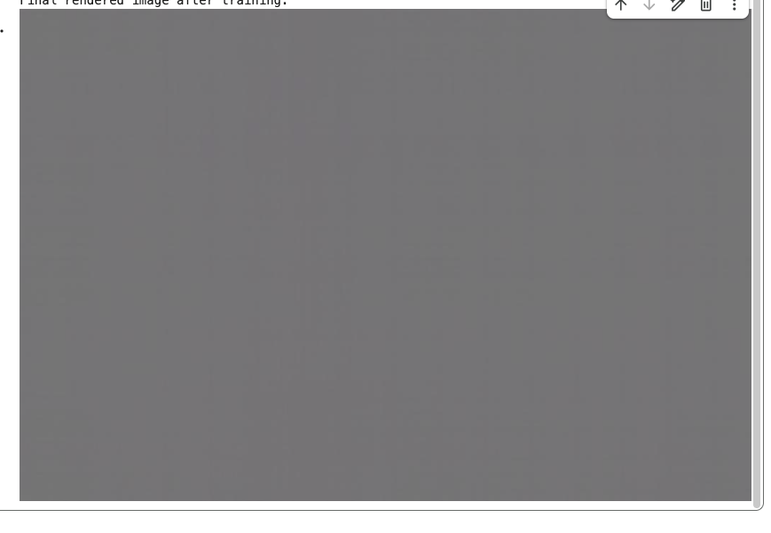
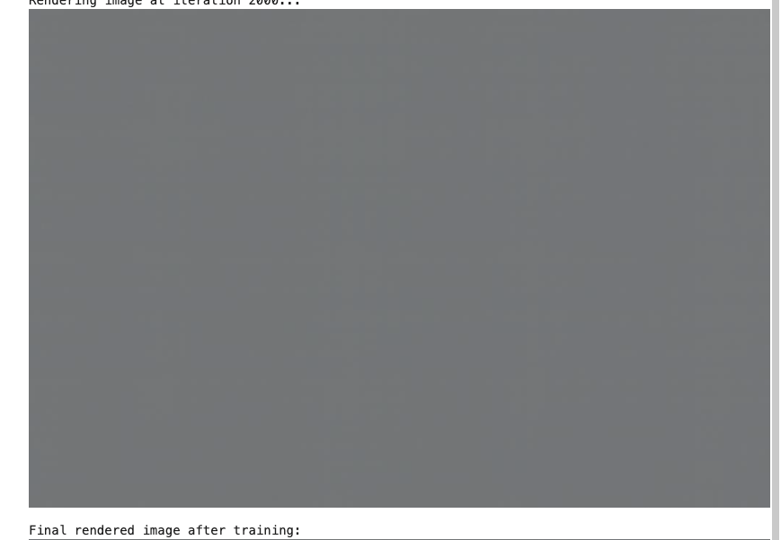

Images of instant noodles taken from different angles.


Images of instant noodles taken from different angles.
Model Architecture: 4 layers, width 256, relu activations except for output layer which is sigmoid, learning rate 5e-4, batch size 10000, 2000 iterations.
Jasper National Park
Jasper PSNR graph:
Variations of model architecture and their results at 2000 iterations:
3 layers, L=8
4 layers, L=8
3 layers, L=10
4 layers, L=10

Rays and sampled points for lego bulldozer